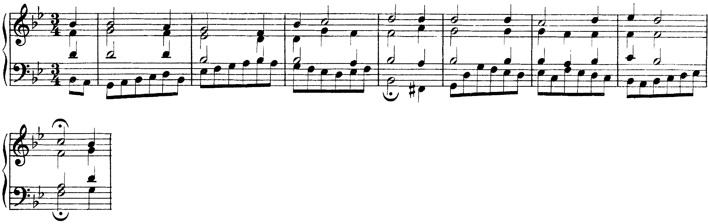

Quattro cadenze a quattro parti: due chiudono (autentica e plagale), due lasciano la frase aperta (sospesa e d’inganno). La nota del soprano gradua la chiusura.
La cadenza assume così il ruolo dei segni d’interpunzione del linguaggio scritto.
Carlo Marenco, Manuale d’armonia, p. 52
Lezione di due ore. Seconda ora: Le cadenze d'inganno e plagale, il primo rivolto, e la seconda specie: la nota di volta e la cadenza. I compiti per casa sono alla fine.
C8Successioni armoniche e cadenze, pp. 282–291
Sezione C, unità 8: lezione 25 «La cadenza autentica e la cadenza sospesa» (pp. 282–285), lezione 26 «Metro e ritmo nelle cadenze», lezione 28 «Altre cadenze» (la plagale, l’evitata e la d’inganno, pp. 290–291). Per le cadenze con la sottodominante nella melodia: B8, lezione 30 (pp. 184–185).
La cadenza è il collegamento di accordi posto alla fine di una semifrase, di una frase o di un periodo, che ne segna l’articolazione come la punteggiatura segna quella di un testo: «stati di sospensione o conclusione, di slancio o riposo, domanda o risposta». Marenco distingue cadenze conclusive e cadenze sospensive (o semicadenze) (Manuale d’armonia, p. 52). Il libro la definisce «un particolare profilo melodico, spesso discendente, accompagnato da una successione di accordi con effetto conclusivo» (p. 282).
| Cadenza | Accordi | Effetto |
|---|---|---|
| autentica (perfetta o imperfetta) | V–I | conclusiva |
| plagale | IV–I | conclusiva, più debole |
| sospesa | I–V, IV–V | sospensiva |
| d’inganno | V–VI | elusiva |
Chiamare cadenza qualunque V–I. Dentro una frase lo stesso collegamento non chiude niente: diventa cadenza quando cade alla fine di un’unità della frase, con l’accordo d’arrivo su un tempo forte e, spesso, un valore più lungo.
La cadenza autentica è il collegamento V–I: per Marenco «il più semplice e al contempo il più energico segnale di chiusura di una struttura musicale grande o piccola che sia» (p. 52, dove è chiamata cadenza perfetta). È perfetta quando i due accordi sono in stato fondamentale e il soprano arriva sulla tonica (posizione melodica di ottava); è imperfetta quando il soprano arriva sulla terza o sulla quinta dell’accordo, oppure quando uno dei due accordi è rivoltato (libro, pp. 283–284).
«La nota posta al soprano definisce la posizione melodica dell’accordo»: di ottava con la fondamentale al soprano («senso di chiusura dell’accordo in se stesso»), di terza con la terza, di quinta con la quinta (Marenco, p. 10). Nei bassi numerati si indica con i numeri 8, 3, 5 sopra la prima nota (Zaffiri, Appunti di armonia complementare, p. 9).
Le due frasi del periodo hanno lo stesso basso e la stessa armonia fino alla cadenza. Alla b. 4 il soprano arriva sul si, terza dell’accordo di sol: la cadenza è autentica ma imperfetta, e la frase chiede una continuazione. Alla b. 8 il soprano sale dalla sensibile fa♯ alla tonica sol: cadenza perfetta, e il periodo si chiude.
Chiudere un brano in posizione di terza o di quinta. La cadenza resta autentica, ma non conclude: alla fine di un basso si chiude in posizione di ottava.
La sensibile del soprano che non sale. Nella cadenza perfetta con il soprano sensibile–tonica, il fa♯ deve salire al sol; se scende, la cadenza perde la sua spinta e il soprano chiude sulla quinta.
La cadenza sospesa si ferma sull’accordo di dominante, raggiunto dal I o dal IV: «contrariamente alla cadenza perfetta, quella sospesa è il mezzo più rapido ed efficace per generare tensione, sospensione» (Marenco, p. 53). Chiude di norma la prima frase di un periodo, e crea l’attesa della seconda (libro, pp. 284–285).
Nel corale BWV 326, brano guida di questa unità, le prime due frasi chiudono in modo diverso. La prima (bb. 1–4) arriva sul I con il soprano sulla terza, re: cadenza autentica imperfetta. La seconda passa per sol minore (alla b. 4 il basso scende al fa♯, sensibile di quella tonalità), torna al si♭ maggiore e alla b. 8 si ferma sul V, preceduto dal I in primo rivolto: cadenza sospesa. Il basso procede in crome dall’inizio alla fine; gli accordi si leggono sui movimenti.

Due ascolti delle bb. 1–8. Al primo si alza la mano alle due chiuse (b. 4 e b. 8). Al secondo si canta a mezza voce la nota del soprano su cui ciascuna chiude, re e do, e si dice quale delle due lascia la frase aperta.
Riconoscere la sospesa dal soprano invece che dall’accordo. Anche una cadenza autentica imperfetta lascia la frase aperta; la sospesa si riconosce dal basso, che si ferma sul V grado.
Autentica V–I: perfetta con soprano sulla tonica e accordi in stato fondamentale, imperfetta altrimenti. Plagale IV–I: più debole, spesso coda dopo l’autentica.
Sospesa: la frase si ferma sul V. D’inganno V–VI: la sensibile sale, si raddoppia la terza del VI, e la cadenza vera arriva dopo.
Lezione 2, venerdì: il primo rivolto, che rende imperfetta anche una cadenza V–I e fa camminare il basso. La lezione si chiude con il solfeggio parlato, cantato e ritmico.
Con la terza dell’accordo al basso, la linea del basso può procedere per grado invece di saltare di quarta e di quinta. Si guadagna una linea; si perde un po’ di stabilità. Poi la seconda specie: la nota di volta e la cadenza.
Contrariamente allo stato fondamentale, la triade in primo rivolto esibisce un minor grado di stabilità per la presenza della terza al basso.
Carlo Marenco, Manuale d’armonia, p. 26
Nella cadenza d’inganno il V non va al I ma al VI: «più che di cadenza sospensiva si dovrebbe parlare di cadenza elusiva in quanto la risoluzione del V sul I viene deviata, differita per il tramite del suo sostituto, il VI» (Marenco, p. 53). Il VI ha due note in comune con il I, ma è una triade minore e «non è in grado di riprodurne il senso di chiusa finale» (p. 47). Subito dopo, «il procedimento cadenzale è ripreso e portato a compimento da una cadenza autentica» (libro, p. 291).
Il basso sale di grado (V–VI): non ci sono note comuni da tenere. La sensibile sale alla tonica; le altre due voci fanno moto contrario al basso; sul VI si raddoppia la terza, che è la tonica (Zaffiri, p. 10).
Nelle dodici battute che seguono ci sono tutte e quattro le cadenze. Alla b. 4 la sospesa (I–V); alle bb. 7–8 il V va al VI, con il si del tenore che sale al do e il do raddoppiato sul VI; alle bb. 9–10 la cadenza si ripete e arriva al I (perfetta); alle bb. 11–12 il IV torna al I sopra il do tenuto al soprano (plagale).
Lasciar scendere la sensibile nel V–VI. Qui il si del tenore scende al la, raddoppiando la fondamentale del VI: la sensibile non risolve, e tenore e basso arrivano all’ottava la–la per moto contrario dalla decima si–sol. La regola è una: nel V–VI la sensibile sale, e si raddoppia la terza del VI.
La cadenza plagale è il collegamento IV–I. «Il suo senso di chiusa non eguaglia quello della cadenza perfetta», perché la sottodominante è un grado «a forza intermedia»; «spesso, alla fine di un brano, essa succede a mo’ di complemento» a una cadenza conclusiva, ed è «detta anche cadenza dell’Amen in quanto utilizzata spesso nella polifonia antica sulla parola Amen» (Marenco, p. 52). Nel periodo classico ha spesso il ruolo di una coda, un prolungamento della tonica dopo la cadenza autentica (libro, p. 290).
Nell’esempio in do le bb. 11–12 sono una coda plagale dopo la cadenza perfetta della b. 10: il soprano tiene il do, nota comune ai due accordi, il contralto scende da fa a mi e il tenore da la a sol. Nel corale BWV 244/44 la stessa successione chiude la terza frase, alla b. 6, sopra il re tenuto al basso: l’accordo di sol (IV) torna all’accordo di re (I) senza che il basso si muova.
Il corale ha sei frasi, ciascuna chiusa da una corona. Si ascolta per intero e si segnano tre chiuse: alla b. 6 la plagale sopra il basso fermo; alla b. 10 la sospesa, sul V (la al basso); alle bb. 11–12 la perfetta finale, con il basso che scende dal la al re.
Confondere la plagale con la sospesa IV–V perché entrambe contengono il IV. Si guarda l’accordo d’arrivo: sul I la frase si chiude (plagale), sul V resta aperta (sospesa).
C7Rivolti delle triadi, pp. 276–281
Sezione C, unità 7, lezioni 23 «Triadi in primo rivolto» e 24 «Triadi in secondo rivolto». Gli stessi rivolti nel basso di una melodia: B7, lezioni 23–24 (pp. 168–171). Il secondo rivolto si scrive all’ora 26.
Lo stato di un accordo dipende dalla nota che sta al basso: «lo stato fondamentale quando la fondamentale è al basso; lo stato di primo rivolto, o più semplicemente il primo rivolto, quando al basso vi è la terza; lo stato di secondo rivolto quando al basso vi è la quinta» (Marenco, Manuale d’armonia, p. 10). Sopra il basso di un primo rivolto si trovano una terza e una sesta; la cifratura completa 6/3 si abbrevia in 6 (p. 12). Nell’analisi si scrive il grado con la cifra: I⁶, IV⁶, V⁶.
mi al basso, sopra sol e do.
la al basso, sopra do e fa.
si al basso, cioè la sensibile; sopra re e sol.
Prendere la nota del basso per la fondamentale. L’accordo mi–sol–do sopra il mi non è un accordo sul III grado: è il I in primo rivolto (Marenco, p. 13). Si cerca la disposizione per terze, e la nota più grave di quella disposizione è la fondamentale.
Confondere lo stato con la posizione melodica. Lo stato guarda il basso; la posizione melodica (U4 L1) guarda il soprano. Un I⁶ può avere al soprano la fondamentale, la terza o la quinta.
Con I, IV e V in stato fondamentale il basso può usare soltanto il I, il IV e il V grado della scala, e salta quasi sempre (U3 L4). Con i primi rivolti il basso dispone di altre tre note: il III grado (I⁶), il VI (IV⁶) e il VII (V⁶). La scala intera, tranne il II, diventa disponibile, e il basso può procedere per grado.
Lo stesso giro armonico, con i rivolti, diventa una linea: do–si–do (I–V⁶–I), do–re–mi–fa–mi–fa–sol (bb. 2–4), la–si–do (IV⁶–V⁶–I, bb. 6–7). Marenco osserva che la pratica compositiva usa il primo rivolto «prevalentemente in alternanza con lo stato fondamentale per riequilibrarne la differente consistenza statico-dinamica», e che nella condotta vale il precetto di «muovere (o tener legate) le voci in modo da far loro effettuare il tragitto più breve verso i suoni del nuovo accordo per moto contrario» (p. 26).
Usare il rivolto nella cadenza finale. Alla b. 7–8 il V e il I sono in stato fondamentale: un V⁶–I alla fine del brano darebbe una cadenza autentica imperfetta (U4 L1). Il rivolto sta dentro la frase; alla chiusa serve la stabilità dello stato fondamentale.
Nello stato fondamentale si raddoppia quasi sempre la fondamentale; «nelle triadi in primo rivolto la scelta è molto meno rigida e uniforme»: la priorità spetta ancora alla fondamentale, ma terza e quinta possono essere raddoppiate se la condotta delle parti lo richiede (Marenco, p. 27).
Un limite che non ha eccezioni: nel V⁶ la terza al basso è la sensibile, e la sensibile non si raddoppia. Nel V⁶ si raddoppia la fondamentale o la quinta.
Nell’esempio in do il V⁶ della b. 1 ha la quinta re raddoppiata (soprano e tenore) e la fondamentale sol al contralto; quello della b. 6 ha la fondamentale sol al contralto e il re al soprano e al tenore. In tutti e due il si compare una volta sola, al basso, e sale al do.
Raddoppiare il basso del V⁶ come si raddoppia quello di un accordo in stato fondamentale. Il si sta al basso e al soprano: le due sensibili salgono entrambe al do, e soprano e basso fanno ottave parallele. Marenco cita lo stesso caso: il raddoppio della terza nel V⁶ crea «le ottave parallele e il raddoppio della sensibile» (p. 27).
Il corale BWV 1/6, brano guida dell’unità precedente, comincia con un primo rivolto: dopo il levare sull’accordo di fa, la b. 1 ha al basso il mi, sensibile, sotto l’accordo di do (V⁶), che sale subito al fa (I). Sul quarto movimento il basso scende al la, terza dell’accordo di fa: I⁶. Il basso delle bb. 1–3 procede quasi tutto per grado, con due soli salti, di terza e di quarta (fa–re, re–la); i salti di quinta (do–fa, sol–do) arrivano con la b. 4 e la sua cadenza.
Si ascoltano le bb. 1–4 cantando a mezza voce il basso. Si segna con un gesto il punto in cui il basso salta per la prima volta di quinta: è l’inizio della b. 4, che porta alla cadenza V–I in stato fondamentale.
Alla b. 2 il basso in crome si♭–do–re–mi attraversa l’accordo di IV: il re è la terza (IV⁶ di passaggio), il do e il mi sono note di passaggio. La b. 6 chiude con il V–I in stato fondamentale e una sospensione al contralto, che si studierà con i ritardi.
Fondamentale al basso: stato fondamentale. Terza al basso: primo rivolto, cifra 6. Il grado resta quello della fondamentale.
Il primo rivolto fa camminare il basso per grado, dentro la frase. Alla cadenza conclusiva si torna allo stato fondamentale.
Si preferisce la fondamentale, ma la scelta è più libera che nello stato fondamentale. Nel V⁶ il basso è la sensibile: non si raddoppia.
C10Le note di figurazione melodica, pp. 298–299
Sezione C, unità 10, lezione 31 «Note di passaggio e di volta»: le due figure a confronto nella melodia accompagnata. La seconda specie non è nel libro.
La nota di volta «disegna un movimento melodico ad arco procedendo per grado congiunto ascendente (volta superiore) o discendente (volta inferiore) con partenza e arrivo da e ad un medesimo suono reale» (Carlo Marenco, Manuale d’armonia, p. 32). Dubois la chiama anche fioritura: «una nota superiore od inferiore congiunta alla nota vera» (Trattato di contrappunto e fuga, p. 4, regola 5).
In seconda specie la volta è consonante. Il tempo debole può essere dissonante soltanto «di passaggio» (Dubois, p. 11, regola 3). Restano due possibilità, perché fra le consonanze soltanto quinta e sesta sono a distanza di un grado: dalla quinta alla sesta e ritorno (volta superiore), dalla sesta alla quinta e ritorno (volta inferiore). Dionisi descrive lo stesso caso nella polifonia del Cinquecento: quando si passa «da una 5a a una 6a o viceversa» e la linea «ritorna su se stessa la seconda nota si configura come nota di volta» (La tecnica del contrappunto vocale nel Cinquecento, p. 24). La volta dissonante è «riservata alla terza specie e proibita in seconda» (Felix Salzer, Contrappunto e composizione, p. 49).
Nelle dieci battute che seguono i numeri indicano l’intervallo con il canto dato; p segna le note di passaggio, v le note di volta. Alla b. 4 il mi sale al fa e torna (quinta e sesta sopra il la: volta superiore); alla b. 6 il do scende al si e torna (sesta e quinta sopra il mi: volta inferiore). Le dissonanze sono due, entrambe di passaggio: la quarta eccedente fa–si alla b. 2 e la settima mi–re alla b. 3. Il culmine, fa, è unico.
La volta dissonante. Il re sopra il do del canto dato è una nona: va per grado e torna, ma è una dissonanza che non passa. In minime non si usa; nella polifonia del Cinquecento «le note di volta si presentano solo in valori di semiminima, non di minima» (Diether de la Motte, Il contrappunto, p. 127).
La volta ripetuta. Due volte di seguito sulla stessa nota fermano la linea: Dubois chiede di evitare, in minime, «tre volte il ritorno sulla stessa nota colla stessa nota di volta» (p. 8), e Salzer avverte che la volta consonante «rischia di produrre risultati eccessivamente statici» (p. 49). Nell’esempio le due volte sono lontane e di segno opposto.
1. Si scrivono i tempi forti come un contrappunto di prima specie, con la prima nota dopo la pausa e la cadenza (U3 L5).
2. Si guarda la distanza fra due forti vicini. Terza: in mezzo, una nota di passaggio, consonante o dissonante. Stessa nota: in mezzo, una nota di volta, soltanto se forma la quinta e la sesta con il canto dato. Un grado o un salto più ampio: in mezzo, una consonanza raggiunta per salto, che di solito cambia direzione.
3. Si controllano le perfette da un debole al forte seguente, e che nessuna nota sia ripetuta.
Nell’esempio della slide precedente le tre scelte compaiono tutte: passaggi alle bb. 2, 3, 5 e 9 (forti a distanza di terza), volte alle bb. 4 e 6 (forti uguali: mi–mi, do–do), salti consonanti alle bb. 7 e 8 (do–sol, la–fa). Alla b. 8 i forti sono uguali (la–la), ma sopra il fa del canto dato la volta sarebbe dissonante (sol, seconda; si, quarta eccedente): il salto consonante la sostituisce. Alla b. 7 il salto varia la linea dopo tre battute di moto per grado.
Mettere una volta dove i forti sono uguali ma la quinta e la sesta non ci sono. Sopra il do del canto dato, il do del contrappunto (ottava) non ha una volta consonante: il re è nona, il si settima. In quel caso si cambia lo scheletro, oppure si usa un salto consonante (do–la–do, ottava e sesta).
La prima battuta ha una pausa di minima e una minima in quinta, ottava o unisono; l’ultima ha una semibreve in ottava o unisono (Dubois, p. 11, regola 2, che subito dopo dà «le formule della penultima battuta»). Nella penultima battuta «la sensibile deve immediatamente precedere la tonica finale; […] la sensibile dovrà essere la seconda delle due minime»; in minore il settimo grado si altera, e con lui il sesto se lo precede (Salzer, p. 46).
Le formule sono quelle della clausola a due voci: una voce scende di grado alla finale (re–do), l’altra sale dalla sensibile (si–do). Sono le due voci esterne della cadenza autentica perfetta a quattro parti (U4 L1).
Con il canto dato re–do al basso, il contrappunto ha la–si nella penultima battuta: la sesta maggiore re–si si apre all’ottava, come alle bb. 9–10 dell’esempio. Con il canto dato sopra, il contrappunto ha sol–si: la quinta (dodicesima) e la terza (decima), poi l’ottava. Quando è il canto dato a portare la sensibile, il contrappunto prende la sopratonica sul tempo debole e scende alla finale.
Mettere l’ottava sul tempo forte della penultima battuta. La sensibile del debole è giusta, ma le due ottave re–re e do–do stanno sui forti di battute vicine, separate da una sola minima: sono ottave parallele (Dubois, p. 11, regola 4). Sul forte della penultima va la quinta (la) o la terza (fa).
Lascia una nota per grado e vi torna. In seconda specie è consonante: quinta e sesta sulla stessa nota del canto dato, in un senso o nell’altro. La volta dissonante è della terza specie.
Nella penultima battuta la sensibile sta sul tempo debole. Contrappunto sopra: la–si–do (5, 6, 8). Contrappunto sotto: sol–si–do (5, 3, 8). Mai l’ottava sul forte della penultima.
Forti a distanza di terza: passaggio. Forti uguali: volta, se ci sono la quinta e la sesta. Altrimenti: salto consonante.
Mercoledì, ora 24: ascolto armonico di tonica, sottodominante e dominante; poi le interrogazioni di teoria, tutta l’ora (U4 L4). La lezione si chiude con il solfeggio parlato, cantato e ritmico.
Compiti per la prossima volta
Realizza il basso a quattro parti.
Sul quaderno, a matita. La foto del lavoro finito va su Classroom. Nel Workbook: apri l’esercizio C2-U4-L2-21 ↗
Compiti per la prossima volta
n. 190 e n. 191 parlato · n. 192 e n. 193 cantato · n. 194 e n. 195 ritmico
Ogni pezzo a tempo, senza fermarti: il parlato a nomi, il cantato prendendo il primo suono dalla tastiera, il ritmico battendo la pulsazione.
Scrivi la melodia sul quaderno, in chiave di violino: otto battute in 3/4, do maggiore. Il primo suono è do. Prima il riferimento, poi tutto due volte, ogni coppia di battute due volte, il collegamento 1–4, 3–6 e 5–8, e tutto per controllare.
Il riferimento: accordo di tonica e primo suono
Il dettato · otto battute
Le sezioni (riferimento, tutto, le coppie, il collegamento) si ascoltano una per una e si ripetono quanto serve; le fasi fanno la procedura della classe, con gli annunci e le pause, da qualunque punto.
Sul quaderno scrivi in testa la sigla C2-D-U04-L2. Si corregge all’inizio della prossima lezione.
Compiti per la prossima volta
Scrivi un contrappunto di prima specie (nota contro nota) sopra il canto fermo, in modo dorico (finale re): nove battute. Comincia su una consonanza perfetta, alla cadenza la sensibile sale alla finale, niente quinte e ottave consecutive.
Sul quaderno, con la sigla C2-CP-U04-L2 in testa; la foto va su Classroom.
Scritto: Un basso numerato di otto battute (Workbook, esercizio C2-U4-L2-21), sul quaderno; la foto va su Classroom. Solfeggio dal quaderno di lettura: parlato n. 190, 191; cantato n. 192, 193; ritmico n. 194, 195 (a tempo, senza fermarsi). Dettato C2-D-U04-L2 dalla pagina della lezione (sezioni da ascoltare, o le fasi della procedura guidata), sul quaderno con la sigla. Contrappunto di prima specie sul canto fermo (C2-CP-U04-L2).
In classe
A nomi, a tempo, con la mano che batte. Chi si ferma riparte dalla battuta dopo.
Apri il n. 186 nel quaderno di lettura ↗ chiave di contralto · 4/4
In classe
Si prende il tono dalla tastiera, si canta insieme; poi a gruppi.
Apri il n. 187 nel quaderno di lettura ↗ chiave di violino · 4/4 · fa maggiore
Apri il n. 188 nel quaderno di lettura ↗ chiave di violino · 2/4 · fa maggiore
In classe
Tutti insieme, battendo la pulsazione. Poi a file, due battute a testa.
In classe
Il basso usa soltanto I, IV e V, in stato fondamentale o in primo rivolto. Sotto ogni nota scrivi il grado dell’accordo e, se è un primo rivolto, la cifra 6.
Dieci minuti sul quaderno, poi si confronta alla lavagna.